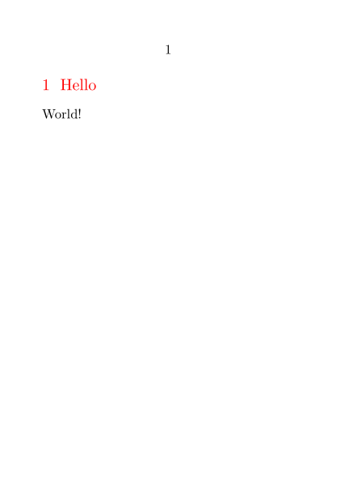

| TODO: This FAQ needs to have a lot of things worked on. To avoid clutter from repeated TODO tags, just note missing answers with "...", and put notes about missing information in parentheses. (See: To-Do List) |
Contents
ConTeXt General
What is ConTeXt?
-
ConTeXt is a document production system, based on Donald Knuth’s
TeX
, for typesetting high-quality documents. More specifically, it is both:
- a set of high-level macros written in Lua and the (somewhat arcane) TeX language, and these macros simplify the task of designing layouts, making hyperlinks, etc.
- and a set of software and tools for moving from these macros to high-quality digital documents.
- Unlike familiar word processors where the formatting of the final document is crafted while writing the content, ConTeXt documents are written without formatting, in plain text, using a macro language. This means that the document’s content can change independently of its formatting and vice versa.
-
- Features
- ConTeXt supports colors, configurable page backgrounds, layers, hyperlinks, presentations, figure-text integration, cross-references, bibliographies, indices, typesetting for chemistry and physics , conditional compilation , processing XML data, non-Latin languages, and binding and imposition .
-
- Internationalization
- ConTeXt provides support for output in many languages including western European languages, eastern European languages, Indic languages, Arabic, Chinese, Japanese, and Korean. It also has a multi-lingual user interface with support for markup in several languages besides English, but probably nobody uses that.
-
- Compatibility
- ConTeXt supports the modern TeX engines LuaTeX (MkIV) and LuaMetaTeX (LMTX). Older versions (MkII) worked with pdfTeX or XeTeX .
-
- History
- ConTeXt was developed from 1990 by Hans Hagen from PRAGMA Advanced Document Engineering (Pragma ADE), a Netherlands-based company. See ConTeXt history for further details.
-
- Licensing
-
ConTeXt is
free software
. The program code (i.e. anything not under the
/docsubtree) is distributed under the GNU GPL ; the documentation is provided under Creative Commons Attribution NonCommercial ShareAlike license.
-
- Example
- A simple ConTeXt document resembles:
-
\setuppapersize[A7] \setuphead[section][color=red] \starttext \section{Hello} World! \stoptext
This produces:
- 
-
- Technical Details
-
- ConTeXt can be used to typeset complex and large collections of documents, like educational materials, user guides and technical manuals. Such documents often have high demands regarding structure, design and accessibility. Ease of maintenance, reuse of content and typographic consistency are important prerequisites.
- ConTeXt is developed for those who are responsible for producing such documents. ConTeXt is written in the scripting language Lua and the typographical programming language TeX. For using ConTeXt, no Lua or TeX programming skills and no technical background are needed. Some basic knowledge of typography and document design will enable you to use the full power of ConTeXt.
- ConTeXt is parameter driven and the user interface supports several languages, like English, German and Dutch. This means that those less familiar with the English language can choose the interface that suits them best. (TBH, this is more theoretical or for domain specific uses, since only the English interface is documented.) Of course ConTeXt can typeset in many languages.
-
Originally ConTeXt was written as tool for writing complex, constantly changing and extensive educational documents. Although much functionality originates there, ConTeXt has proven to be quite suitable to perform many other complex typesetting tasks. Some features are:
- automatic placement of figures, formulas, tables and other kind of Floating objects
- automatic generation of lists of abbreviations, synonyms, and whatever needs to be sorted
- automatic numbering of Footnotes
- adapting footers and headers to the current page content
- extensive formatting of itemizations in many levels
- consistent typesetting of legends to formulas
- maintaining several registers, if needed with extensive interactive support
- extensive cross-referencing capabilities
- generating lists of used figures, tables, formulas and more
- forcing rigourous consistency in emphasizing parts of the text
- managing documents in a project environment
- automatic placement of marginal notes
- typesetting in more than one column
- identifying textual elements in such a way that they can be hidden, moved and reused when needed (questions, answers, definitions, etc.)
- using text in more that one document, with a different layout if needed
- automatic hyphenation of words as well as adaptation to language specific typographic needs
- inclusion of illustrations in standardized formats from other applications
- using Color
- easy change of Document layout , while guarding consistent typography
- providing multiple tables of contents and lists, at all levels, to provide optimal accessibility
- automatic numbering of definitions, lemmas and other structural components
- automatic numbering of figures, tables, and other floating bodies
- automatic makeup of tables and formulas
-
-
- ConTeXt extensively supports the PDF format and is able to directly produce highly interactive PDF files. All cross-references are automatically converted to hyperlinks. Such documents can be viewed and consulted with Acrobat or any other PDF viewer. ConTeXt can provide all kinds of navigational aids that can be activated without programming. Electronic versions of documents thereby become very useful in educational settings. The potential of PDF is available to the user: complex forms and JavaScripts are no problem for ConTeXt. PRAGMA ADE has developed ConTeXt in-house mainly to suit its own and customers’ wishes concerning developing educational documents. Flexibility in layout, reuse of content, and maintenance are keywords.
-
How does ConTeXt versioning work?
- In short, there are 3 major version branches:
- Each of the releases in those major branches also has an ISO timestamp that functions as a minor version number.
- See ConTeXt history for further details.
Starting with ConTeXt
How do I install ConTeXt?
- See Installation
Is there a hello-world document?
- Yes. See First Document and Quick Start .
Is ConTeXt free (libre, open source) software?
- Yes. See the Read Me page for details.
Does ConTeXt support Unicode?
- Yes. Unicode (UTF-8) is the default input encoding, and direct Unicode input is preferred over macros or “active characters”. Names of programming constructs (macros, environments, buffers, references etc.) can contain Unicode characters. Math functions even understand Unicode operators.
ConTeXt vs. LaTeX
What are the differences between ConTeXt and LaTeX?
- The main difference between the two, in my opinion, is a philosophical one: LaTeX was created with the idea of separating content and presentation to such an extent that the typical author would write their content and then use a style file created by someone else to provide the visual presentation. Thus, the proliferation of style files and related things.
- ConTeXt, on the other hand, retained the idea of separating content and presentation, but was created with the idea of being used for books, where each book tends to have a different layout, and so the expected “end user” is the person doing all the layout. Thus, it’s designed to provide a vast amount of flexibility for layout in a way that can be fairly easily defined without needing to write a package (or go find one that’s already written).
- To some extent, modern LaTeX has become a lot more like ConTeXt’s intent, with a large quantity of packages, and classes like “memoir” that are designed to give the end user a large amount of control of the visual presentation. Thus, the difference is more one of focus and arrangement – ConTeXt is all “of a piece” and most things are built in and designed as a complete set, whereas with LaTeX it’s generally the case that when you want to do something different, you need to find the right package, and sometimes find that there are three that almost do what you want and none that are quite right (but, then, that also means that there are usually choices for how to do things, which can be good.)
- Another difference is that IMO, ConTeXt is a lot easier to program in. It was designed a fair bit later than LaTeX, for much faster computers, and thus includes a lot of things that […] make programming a lot easier.
- Author: Brooks Moses on c.t.t. usenet (updated)
- (Note that the internal coding of ConTeXt has become much easier, too, with the use of LuaTeX - or perhaps seemingly more complicated, as one has to then learn Lua to understand the internal workings of ConTeXt. Most users will never delve into this level, but do indeed benefit from the increased performance of the ConTeXt system. The loading of the ConTeXt macros and the processing of even very large typesetting projects is *not* slow! And since LuaMetaTeX, ConTeXt is even usually much faster than LaTeX.)
What are the advantages of ConTeXt over LaTeX?
- ConTeXt is a macro package that’s far more advanced than LaTeX. You can enhance LaTeX with third party packages, but not all macro packages work together with each other. ConTeXt is an integrated, powerful and flexible macro package for which you seldom need third party packages. ConTeXt also has been used to create large and complex on-screen documents, including hyperlinks, on screen buttons, forms, cross-document links, and so on.
- Source: LaTeX in proper ConTeXt (by Berend de Boer)
- (You can argue that LaTeX now includes the expl3 layer (developed as “LaTeX 3”) that introduces several modern concepts into LaTeX. But even with the much bigger user base of LaTeX vs. ConTeXt, there are about the same small number of developers who understand the inner workings of either system, maybe because the expl3 constructs look alien to experienced LaTeX (2) programmers as well as users of other scripting languages.)
-
- Best quality math typesetting! (Yes, traditional TeX and LaTeX are lacking in some regards. ConTeXt contains bugfixes for all known math fonts. Nearly everything is configurable.)
- Nested footnotes, several indexes, sophisticated numbering schemas, document-spanning references – no problem.
- Direct typesetting of XML sources is quite easy, you “just” must define typesetting rules for every tag.
- Grid typesetting is easily activated (but somewhat hard to control).
- Multi-column layouts up to magazine layouts (column spans, columns of different width) are possible, but somewhat difficult to control, esp. WRT image placement.
- Color definitions in RGB, CMYK, HSV, L*a*b, “HTML RGB”, spot colors, multi channel colors, transparency, ICC profiles – yes.
- Complex tables with spans, lines and background colors are more easy to do with ConTeXt’s |Natural tables with TABLE than with any LaTeX package. (But the code is more verbose, and there are no auto-width columns.)
- Image placement as Floating objects is easy and mighty.
- Arabic support is good enough for critical editions of historical Islamic texts or typesetting the Qur’an, thanks to the Oriental TeX project. Support for Indic languages and CJK is also good (vertical is limited, sorry).
- Layers and Overlays are fun.
- Automation features (like latexmk or arara for LaTeX) and many helper scripts ( mtxrun script ) are integrated.
-
Debugging features (
\show…commands, Trackers , directives, code checking) included; no useless TeX command line stops any more. - The whole distribution is really slim and contains the LuaMetaTeX source code (no external dependencies, easily compilable on a wide range of architectures). This affects also docker containers .
- LuaMetaTeX is fast . (Hint: If you use Pandoc to generate PDF from Markdown, it usually uses LaTeX. Try the ConTeXt backend, it’s much faster.)
What are the advantages of LaTeX over ConTeXt?
- It has been a long battle to get publishers of scientific journals, for example, to accept submissions coded in LaTeX. Currently, submitting a ConTeXt document to such journals or to open repositories such as arXiv is problematic. This is one reason to continue using LaTeX for such work.
- Another advantage is that many good books on LaTeX exist. Documentation of ConTeXt is not satisfactory, as attested by much activity on the mailing list, but is slowly being improved. And good books on the use of ConTeXt need to be written!
- There are a few things that ConTeXt can’t do yet, that don’t work any more or that work better in LaTeX:
-
- TikZ generally works with ConTeXt, but is much slower than MetaPost and MetaFun and better integrated with LaTeX.
- Forms (see Widgets ) are broken WRT radiobuttons and some other details; they were implemented very early and the code doesn’t suit many PDF viewers any more. (state in 2022, but at least since 2019)
- Similar to LaTeX, there are several table modes , and, depending on your needs, none of them can provide all necessary features.
-
The possibilities for parallel text streams (in LaTeX e.g.
reledmacorparallel) aren’t mature or documented . - There’s no beamer equivalent; there are many presentation layouts around, you can do stepwise itemizations, but the possibilities are limited.
- There are LaTeX styles/classes/packages for “everything”. While many of these are easily replaced by ConTeXt setups and modules, the range of what LaTeX has to offer is much wider, due to the much bigger user and developer base.
XML and other formats
How can I convert a document into RTF or HTML?
- There’s currently no converter such as LaTeX2html or tex4ht available for ConTeXt. If you’re ready to pay a price and put some more effort in your document, the best way is to use XML input and produce PDF out of it with ConTeXt and HTML using XSLT.
What about the other way around?
-
- Try Pandoc ’s ConTeXt backend.
XML: please tell me more about it
- There is a section on the wiki dedicated to typesetting XML .
Fonts and Typography
Can I change to LaTeX’s Computer Modern font?
I see differences in screen between default fonts in ConTeXt (Latin Modern) and LaTeX (Computer Modern). Can I switch to LaTeX’s default font?. I think it’s more aesthetical.
- No.
-
(I mean - of course you can; you only need to modify a few type-xxx.tex files and replace lm with cm in the source. But that solution is not/will not be supported officially.)
-
Is there any tutorial for doing it?
- No. There are no tutorials for the things that one is not supposed to mess with. Take a look at how things are done in those files and replace any occurrence of lm with cm.
-
Is there any tutorial for doing it?
- There might be a workaround for this. Install the OpenType version of Computer Modern fonts on your system and use it like other OpenType fonts.
How can I get the “oldstyle numbers” (text figures) in a document?
The mediaeval numbers can be inserted locally via the font switch \os.
With OpenType fonts that come with text figures you can just add the respective font feature to the set of font features.
\definefontfeature[default][default][onum=yes] \setupbodyfont[schola,8pt] \starttext 1234567890 \stoptext
or
\setupbodyfont[schola,8pt] \definefontfeature[oldstyle][onum=yes] \starttext 1234567890 {\addff{oldstyle}1234567890} \stoptext
See mailing list discussion at http://www.ntg.nl/pipermail/ntg-context/2011/058394.html .
(You can check whether your font supports the “onum” feature by running
otfinfo -f or mtxrun --script font --info --pattern=myfontname on the OTF file.)
Alignment
Why does
\startalignment[right]
or
\framed[align=right]{some text}
align my text left instead of right and vice versa?
- This is for backward compatibility with older versions; see Alignment . Hans was originally thinking of "ragged right" and "ragged left" alignment. Use flushleft and flushright instead.
Why is \framed{} not centred?
\starttext \startalignment[middle] \framed{middle?} \stopalignment \startalignment[middle] middle! \stopalignment \stoptext
Answer: \framed switches to vmode, so you need \dontleavehmode:
\starttext \startalignment[middle] \dontleavehmode \framed{middle!} \stopalignment \stoptext
Spacing
\setupindenting[medium]
doesn’t work?
-
This does work, but the effect is not what you expect. Without
yes, you have now set up the default size, but you have not turned paragraph indenting on. You have to execute\setupindenting[yes]before it starts actually indenting your paragraphs.
How can I get a horizontal space with a defined width, so as ex. "\hspace{3em}" or "\hspace*{3em}" in LaTeX?
-
A horizontal space can be inserted with the TeX-Primitive
\hskip〈dimension〉or with the ConTeXt command \hspace [identifier] .
Why is there a line-break in the output after some commands?
\starttext \externalfigure[hacker][width=1cm] Why a new line here? \stoptext
Answer: \externalfigure switches to vmode, so you need \dontleavehmode:
\starttext \dontleavehmode \externalfigure[hacker][width=1cm] Same line! \stoptext
Math
Does $...$ work for inline math, like in (La)TeX?
- Yes, but better use \im .
Does $$...$$ work for display math, like in (La)TeX?
- No; the spacing above and below the equation will be wrong, and maybe other aspects too. Instead use \startformula … \stopformula or the short form \dm (just as one rather generally prefers to use \begin{equation} … \end{equation} in LaTeX).
How do I get a numbered equation?
- Add \placeformula before (or \startplaceformula … \stopplaceformula around) the \startformula .
Misc
Can I use some simpler bibliography method?
I see that the method of adding references in ConTeXt is like BibTeX in LaTeX. Is there any simple methood like build-in LaTeX method (\thebibliography)?
- Perhaps Simple bibliography ?
How do I make a presentation?
- You don’t need any special package (like beamer in LaTeX) to make a presentation. In contrast to LaTeX, changing the document size, changing colors, adding hyperlinks, ... is extremely simple in ConTeXt. See Presentations for more specific topics.
-
Don’t forget to activate links etc. with
\setupinteraction[state=start].
- For simple presentations, have a look at the Modules “simpleslides” or “president”.